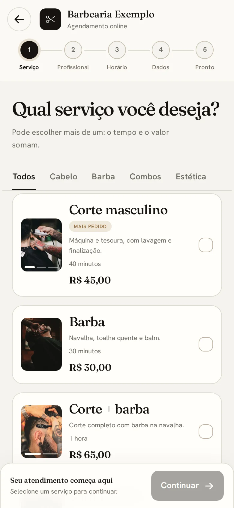

Sem ligação, sem esperar resposta
Seu cliente marca
sozinho.
Olha o tempo.
00:00
cronômetro

✓
2
3
4
5
Com quem você quer cortar?
Lucas
Próximo livre: hoje 16:00
João
Próximo livre: amanhã 9:30
Ana
Próximo livre: hoje 17:30
✓
✓
3
4
5
Escolha o horário
Hoje · tarde
14:00
15:00
16:00
16:40
17:20
18:00
✓
✓
✓
4
5
Seus dados
Nome
WhatsApp
✓
✓
✓
✓
5
✓
Tá marcado!
Corte masculino · hoje 16:00
com Lucas · lembrete no WhatsApp
Agenda aberta
24 horas.
Sem você parar o corte.
Studio
Flow
studioflowapp.tech
Comenta LINK